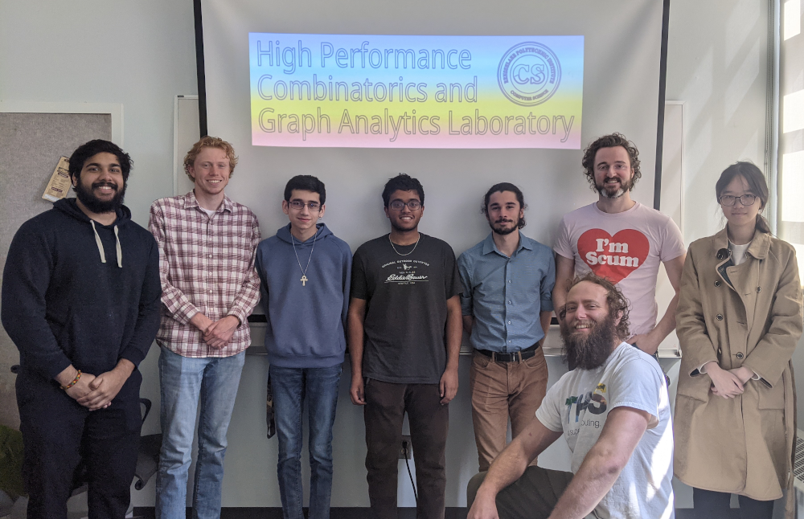

PI: Professor George M. Slota
Lab: 108 Amos Eaton
Rensselaer Polytechnic Institute
Current Projects:
Low-precision Second-order-type Distributed Methods for Training and Fine-tuning Foundation Models - We are considering developing low-communication training methods for large scall LLMs, targetting specialized IBM hardware with lower communication bandwidth than typically seen on GPUs. We are specifically looking at compression schemes combined with novel optimization algorithms.
Funding: IBM, 2 years, $400,000
CAREER: Scalable Graph Processing to a Quadrillion Edges and Beyond - We consider the general problem of - Given a massive relational dataset, how can we efficiently perform general-purpose analytic computations on this dataset using leadership-class supercomputers?
Funding: NSF, 5 years, $488,066
Frameworks, Algorithms and Scalable Technologies for Mathematics (FASTMath5) SciDAC Institute - We are working on GPU partitioning methods that target DOE applications, such as climate and other scientific simulations.
Funding: DOE, 5 years, $250,000 for PI Slota
Past Projects:
Spectral Partitioning Schemes for Physics Simulation Data Sets Funding: Sandia National Labs, PIRAMID LDRD, 3 years, $119,703
MRI: Acquisition of a Next Generation, Data-Centric Supercomputer Funding: NSF, 3 years, $990,000 in total
Distributed Graph Algorithmics to Test Algorithms on HPC Systems with Multiple Levels of Main Memory Funding: Sandia National Labs, 3 years, $61,356
Frameworks, Algorithms and Scalable Technologies for Mathematics (FASTMath4) SciDAC Institute Funding: Subcontract from Sandia National Labs, 3 years, $135,000
Current Members:
Michael Mandulak PhD student
Anweshit Panda PhD student
Dong Lin MS student
Yash kaul MS student
Anthony Fabius BS student
Ujwal Pandey BS student

Past Members:
Daniel Savidge, MS, 2024. First position: Travelers.
William Hawkins, MS, 2024. First position: GE.
Aidan Hoover, BS, 2024.
Christopher Brissette, PhD (Thesis), 2023. First position: NVIDIA.
Samyuth Sagi, BS, 2023.
Connor Wooding, MS, 2023. First position: Palantir.
Ruochen (Gretchen) Hu, BS, 2022.
William Allen, BS, 2022.
Ian Bogle, PhD (Thesis), 2022. First position: AMD.
David Liu, BS, 2022.
Ian McCaffery, BS, 2021. First position: deFacto Global.
Jack Garbus, BS, 2020. First position: PhD program at Brandeis University.
Morgan Lee, MS, 2019. First position: Regeneron Pharmaceuticals, Inc.
Christopher Jones, MS, 2019. First position: Viasat, Inc.